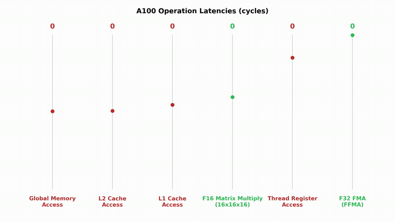
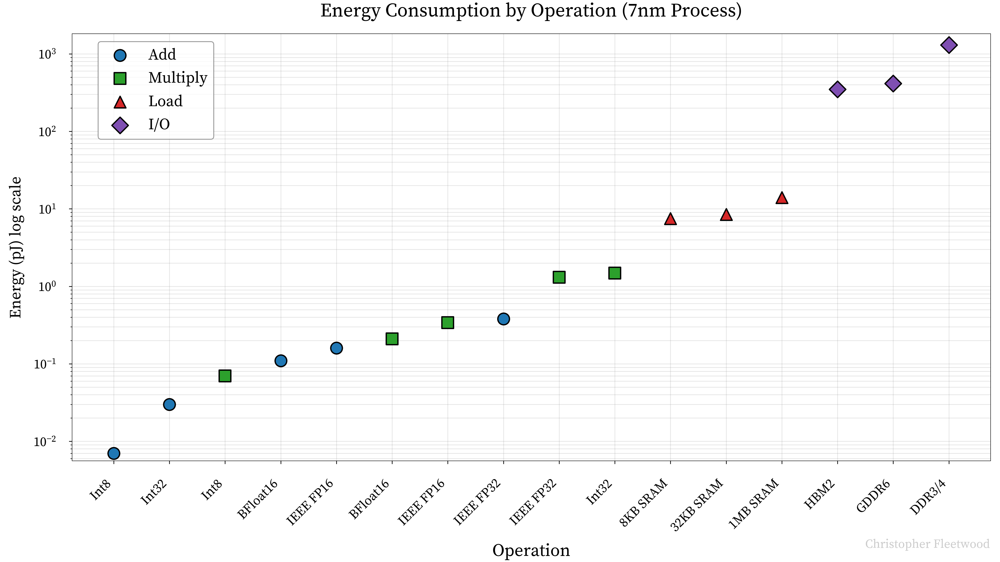
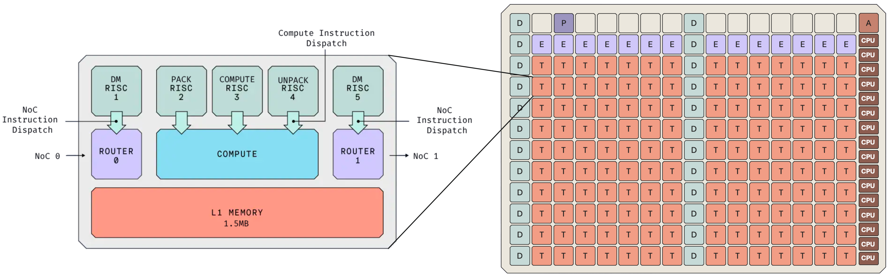

未来数十亿人可能醒着就在跑AI推理，满足这需求要死磕效率，省两样东西：能量和资本。摩尔定律和Dennard缩放双双放缓，硬件架构师只剩一条路：领域专用架构。这篇从推理负载倒推，提出7条设计原则。下文拆解。
不久的将来，数十亿人可能在清醒时间里持续跑AI推理。满足这需求要对效率偏执，省两种关键输入：能量和资本。摩尔定律与Dennard缩放放缓乃至停滞，硬件架构师别无选择，只能做领域专用架构：为手头的任务量身定制的架构。
GPU在深度学习的主导地位很大程度上是意外：图形计算和深度学习的计算负载相似，纯属运气。图形时代的残留今天还在GPU架构里。要是给AI推理从白纸重设计硬件，会长什么样？从推理负载倒推，能得出DSA该有的最优性质，还能预测推理范式往哪转，这对硬件架构师保证投资回报至关重要。
Onur Mutlu的话：大模型超过90% 的系统总能耗花在内存上。很多人看计算系统的视角像哥白尼之前看宇宙：计算是地球，在宇宙中心。这是理解AI推理的坏模型。

内存的延迟和吞吐进步从一开始就落后于摩尔定律。读写真的是慢：下面动画改编自Vrushank Desai，展示A100上不同操作的延迟。注意算力和访存的速度差。

延迟和吞吐还不是全部。加速器的唯一真优化目标是每美元性能，降功耗是降总拥有成本的关键。下图是Google TPU v4i上不同操作、不同数据类型的能耗。注意y轴是对数：读写真的是天价，不管什么内存标准，跟真正的计算比都是碾压级的耗能。
于是DSA的第一公理：最小化数据搬运。后面全文都以此为公理。
优化的第一招是想办法不干这个活。最直接的是把权重张量变小：用更少bit表示权重，工作量直接砍半、砍到四分之一。现代加速器都支持FP8推理，最新一代摸到FP4。要在低位宽保数值精度，硬件要支持高精度累加和在线量化。但降位宽还有个不明显的动机。
两个浮点数相乘需要的全加器数量，是尾数位数的二次函数。M个尾数位的乘法要 (M+1)×(M+1) 个全加器阵列：FP32要576个，FP16 121个，BF16 64个，FP8(E4M3) 16个。每个乘法器用的加法器越少，单位面积塞的算力越多，或者把省下的面积换成L1缓存。
两股力量叠加，降精度的诱惑极大。可惜有下限：transformer到底需要多少bit？智能和压缩深度纠缠，继续降精度迟早伤模型性能。Scaling Laws for Precision的研究认为最优区在7到8 bit之间。
减少搬运机会成本的简单办法是异步数据搬运。双缓冲让计算单元在一块缓冲上算的同时，另一块在填充，计算、访存、卡间通信三重叠加是硬件利用率拉满的前提。这从H100起就是事实标准，任何自重的DSA都该异步优先设计。
前向里Global Memory到Shared Memory的搬运极频繁，值得做专用子系统加速。DMA让张量在存储空间之间搬运完全不经过CPU，Nvidia叫它TMA。H100之前，Nvidia GPU要求所有数据从Global到Shared都经过寄存器，像把河水逼进软管。懂张量布局、能做节点内和节点间拷贝的DMA是未来DSA的核心关切。
数据在系统里走多级缓存，每级在延迟吞吐和容量之间权衡，类似人类记忆。缓存设计看两个维度：时间局部性（用过的数据很快会再用），空间局部性（用过的数据邻居也快被用）。多处理器还要考虑一致性：H100的80MB共享L2要多SM之间的同步与一致性检查，天生就慢。CPU workloads随机，3到4级小缓存；GPU批量可预测，2级大缓存就够。
回到推理：权重张量从DRAM搬进L1，一口气用完，下次再用是下一次前向。缓存（存下来为复用）的前提整个垮掉：按典型缓存层次做AI推理，L1/L2里塞的都是短期不会再用的数据。
真正要的是一块高带宽低延迟的暂存，像L1/SRAM但跳出缓存范式：存着权重张量的块，边存边算。这就是scratchpad，砍掉缓存管理的所有开销。理论上scratchpad够大，kernel之间连中间张量都不用回Global Memory。可惜SRAM一bit要6个晶体管，几KB就吃掉大片本可做算力的面积。Cerebras、Groq、Tenstorrent都在拿算力换缓存。
现代Transformer只有6种操作：注意力、FFN、RMSNorm、激活函数、RoPE、残差相加。性能只看前两个，其余理想情况下能融进去。推理分两个算力需求迥异的阶段：prefill并行处理长prompt填KV cache，decode自回归逐token生成。
算法有个算术强度：操作数除以访存字节。硬件有个ops:byte：算力带宽除以内存带宽。算法强度超过硬件比值就是计算瓶颈，要的就是计算瓶颈，硬件才一直在干有用的活。参考点：[4096,4096] 的BF16矩阵32MiB。下表是几款硬件的DRAM/SRAM参数。
几乎所有FLOPs都在矩阵乘。matmul有个关键性质：计算量随维度立方O(n³) 涨，访存量随平方O(n²) 涨，维度越大算存比越好看。最常见的前向matmul是 [B,D]×[D,F]。什么时候变计算瓶颈？T_math = 2BDF / 加速器FLOPs每秒，T_mem = (2BD + 2DF + 2BF) / DRAM带宽。H100上989TFLOPs除以3.35TB/s，得B ≥ 295 = B_crit。推理时这几乎只在prefill发生，decode凑295 batch太难了。量化到FP8也救不了：H100的FP8算力也翻倍，回到原点。想降B_crit，要么加HBM带宽（对每美元性能边际递减），要么拿算力换SRAM：H100的SRAM侧B_crit = 32，低强度算法也能喂饱算力。
FlashAttention下单头注意力强度 = 4BSTD/(4BSD+4BTD) = ST/(S+T)，S是已有序列长，T是当前采样token数。prefill时S=T，化简得T/2：H100上T ≳ 590就是计算瓶颈，常见system prompt都够。decode时T=1、S远大于T，强度约等于1：decode本质访存瓶颈。直觉也对：加载巨大的KV cache，只对 [1,D] 做一点点操作。不改架构（MQA、GQA、MLA） shrink cache，没辙。
KV cache还是容量问题。用DeepSeek V3的61层、7168隐宽估算，MHA下每token存2×2×61×56×128 = 1749KB。H100的80GB在cache到46000 token时就被吃光，朴素MHA根本做不了长上下文。MLA把k和v压成一个512维隐向量：2×61×512 = 62.5KB/token，小28倍，撑到约130万token才爆H100。SRAM里MHA只能存17个token的cache，MLA能存492个，整页注意力可以放片上。下限还在，但层间投影可能把cache压得更小。
| 硬件 | FP16 TFLOPs | DRAM(GB) | DRAM带宽(TB/s) | DRAM ops:byte | SRAM(MB) | SRAM ops:byte |
|---|---|---|---|---|---|---|
| NVIDIA H100-SXM5 | 989 | 80 | 3.35 | 295.2 | 30.81 | 31.9 |
| NVIDIA A100 | 312 | 40 | 2.0 | 156.0 | 20.72 | 16.4 |
| Tenstorrent Blackhole | 387 | 32 | 0.51 | 758.8 | 204.93 | 8.3 |
| Google TPU v4i | 138 | 8 | 0.61 | 226.2 | 144 | 10.2 |
单加速器装不下前沿模型，必须多卡切分。加卡分摊算力和内存，但卡间通信开销涨，能用来掩盖通信的计算per chip变少，加到某一点就不赚了。想拿计算盖住通信，ops:comms（能做的操作数除以能发的字节数）是关键。
decode只用模型并行切。1D模型并行里MLP层对输入AllGather、对输出ReduceScatter。两次matmul共4BDF FLOPs，通信2个 [B,D] 矩阵：T_math = 4BDF/(Y·C)，T_comms = 4BD/W，Y是卡数，C是单卡FLOPs，W是带宽。要T_math ≥ T_comms，化简得F > Y·C/W，C/W正是ops:comms。用DeepSeek V3的F=18432，H100在约16卡进入通信瓶颈。ops:comms越好看，张量并行走得越远。这里忽略了延迟，小数据量时延迟主导通信时间。
MoE标配专家并行：每卡host一个或几个专家，token按路由发到不同专家子集，算完AllToAll聚合。AllToAll是重切分：batch维切分的token按路由结果重切分，矩阵满天飞，要低延迟高吞吐的fabric。同样的原语反复跑，值得做专用硬件。DeepSeek V3论文点名要通信的硬件优化：没厂商优化就自己拿20/132个SM专做通信，管AllToAll聚合的reduce、专家间张量的内存布局。SM是干计算的，拿来管网络，15% 的Tensor Core被浪费。RDMA如果能在搬运中顺手做点变换（到目的地已规约、已转置），就很仿生：大脑的轴突也不只是被动传信号。
| 硬件 | FP16 TFLOPs | 互连 | 双向带宽(GB/s) | ops:comms |
|---|---|---|---|---|
| NVIDIA H100-SXM5 | 989 | NVLink 4.0 | 900 | 1099 |
| NVIDIA A100 | 312 | NVLink 3.0 | 600 | 520 |
| Tenstorrent Blackhole | 387 | 以太网 | 800 | 484 |
| Google TPU v5p | 459 | ICI | 600 | 765 |
硬件设计时范式不会等你。test-time compute scaling被称为下一条scaling law，推理算力有两个扩展维度：串行和并行。
串行是拉长多步推理链，像Kahneman的系统2思维。这暴涨推理需求，尤其是decode：decode的注意力本质访存瓶颈，大batch才救得回来，能撑高并发的服务商会有规模经济。
并行是n个分身同时想，各自落在解空间不同处。decode要B ≳ 295才吃满硬件，serving里即使连续批处理也不容易凑；既然并行扩展已被证明提质量，直接拿并行思维链把batch填满，利用率上去了，用户体验还免费变好。今年会是研究两个维度最优权衡的热点：token最优的推理时扩展，很像探索利用困境。
Google TPU是计算史上最成功的DSA之一，细节就不展开了。结论：TPU遵守了上面全部原则，所以它是按每美元性能算的当今第一加速器。
最值得看的是收缩压阵列：128×128权重驻留的收缩压阵列，名字来自和人体循环系统的相似：数据（血液）流过很多处理单元（细胞）再回内存（心脏）。权重预载进处理单元，输出从左到右累加。
收缩压阵列的核心好处是把数据搬运压到理论极限。朴素方阵乘法n³ 次内存读，空间复杂度3n²；分块优化到 Θ(n³/(b√M))；收缩压阵列干到最优的2n² 次读。理论上每个输入和权重元素只读一次，在阵列里流动中被反复用。实际中阵列维度固定、负载尺寸多变，利用不满时整单元照样干活，伤功耗；喂饱阵列要复杂的软硬件。但TPUv4功耗比同代A100低1.3到1.9倍，理论效率在实践里兑现了。OpenAI据报道今年也要流片自己的收缩压阵列加速器。
Tenstorrent 2016年成立，目标从零造AI加速器和软件栈硬刚Nvidia。即將推出的Blackhole是前面原则的实践案例。芯片布局第一眼像GPU的独立核心网格，但只是表面像：D核管数据搬运，T核是Tensix计算，E核是以太网，CPU核跑Linux，还有板管核心。按功能特化的核心家族，正是专用硬件子系统的原则。

Tensix核心对标Nvidia的SM：两个数据搬运核在NoC上发起管理异步事务，异步优先原则的直接实现；1.5MB高速本地SRAM，scratchpad原则；32×32矩阵块引擎对标Tensor Core；三个计算核，两个专做数据类型打包解包，低精度原则。NoC把全片核心连起来，核间、跨以太网到别的加速器都能拷：便宜加速器加大带宽scale-out，这就是Tenstorrent的thesis。软件栈也反传统：不像CUDA那样kernel结束L1就未定义，中间结果可以留在L1里连续变换，几乎是收缩压式的：反复变换再回内存，死守最小化数据搬运。
最有争议的是Blackhole拒绝HBM，用GDDR6，带宽只有512GB/s，对H100的3.35TB/s。Jim Keller说HBM太贵，做不到commodity定价。账：2023年H100的BOM约3320美元，SemiAnalysis估HBM3按15美元/GB，内存占整机BOM约36%，GDDR6便宜得多。Tenstorrent赌的是：超大L1、异步搬运、NoC、更灵活的编程模型，HBM可以不要。风向也在帮它：MLA证明注意力不一定永远访存瓶颈。如果啃下低延迟高带宽互连，参数加载负担可以分摊：T_mem = 2P/(N·A_bw)，P是参数量，N是卡数，A_bw是单卡内存带宽。
挑战巨大。最大的是软件：CUDA护城河常被挂在嘴边，但真正的护城河是全球上千个把SIMT范式内化了的工程师。从零写软件栈、透明扩展到几千卡、逼工程师从SIMT换到MIMD，可能是桥太远。而且Nvidia账上躺着约380亿美元现金，行业极度资本密集：制程的好节点它先挑，范式如果更吃内存，HBM4e起它先拿。但如果Tenstorrent 24个月内拿出像样的软件栈，架构风向继续往它这边吹，它会是强有力的挑战者。
设计流片一轮2到3年，AI范式跑得快得多，新架构新数据类型层出不穷。硬件按去年的模型优化好，三年回本期没到范式变了， hyperscaler花800亿美元买的硬件就砸手里。没人能准确预测架构突破，但能不能看出点方向，对冲投资？
如果构造AGI的方法搜索空间又大又稀疏，就该向唯一存在性证明取经：人脑。Hassabis 2010年的talk提出用系统神经科学迭代开发AGI组件：不是无脑模仿大脑，而是理解抽取底层算法，再创造性务实地在软硬件里重实现。2017年的论文列了AI创新和大脑的对应：这不是巧合，是智能景观里的趋同演化。前沿模型全是MoE，和大脑的区域特化如出一辙。往前看，情景记忆、海马新皮层巩固系统都可能被搬进硅片。
推理需求的增长短期不会停。在这个市场里做推理硬件想对冲注定失败：效率来自特化，特化和灵活水火不容，必须大胆赌架构风向。系统神经科学给了个看未来的lens。程序员也一样是投资人，时间和expertise是资本，早押中一个成功的技术方向回报巨大，但同样要敢下注。这篇的原则，最小化数据搬运、优化内存层次、为scale-out设计，是给敢下注的人的路线图。大卫能不能干掉歌利亚，走着瞧。
参考：https://fleetwood.dev/posts/domain-specific-architectures